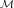
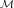
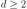
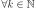

Process¶
-
class
Process(*args)¶ Base class for stochastic processes.
Notes
The Process class enables to model a stochastic process.
A multivariate stochastic process
 of dimension
of dimension  is defined
by:
is defined
by:where is an event,
 is a domain of
discretized on the mesh ,
is a domain of
discretized on the mesh ,  is
a multivariate index and .
is
a multivariate index and .A realization of the process
, for a given
is defined by:
is the random variable at index defined by:
A Process object can be created only through its derived classes:
SpectralGaussianProcess,GaussianProcess,CompositeProcess,ARMA,RandomWalk,FunctionalBasisProcessandWhiteNoise.Methods
getClassName()Accessor to the object’s name. getContinuousRealization()Get a continuous realization. getCovarianceModel()Accessor to the covariance model. getDescription()Get the description of the process. getDimension()Get the dimension of the domain .getFuture(*args)Prediction of the  future iterations of the process.
future iterations of the process.getId()Accessor to the object’s id. getImplementation(*args)Accessor to the underlying implementation. getMarginal(*args)Get the marginal of the random process. getMesh()Get the mesh. getName()Accessor to the object’s name. getRealization()Get a realization of the process. getSample(size)Get  realizations of the process.
realizations of the process.getSpatialDimension()Get the dimension of the domain .getTimeGrid()Get the time grid of observation of the process. getTrend()Accessor to the trend. isComposite()Test whether the process is composite or not. isNormal()Test whether the process is normal or not. isStationary()Test whether the process is stationary or not. setDescription(description)Set the description of the process. setMesh(mesh)Set the mesh. setName(name)Accessor to the object’s name. setTimeGrid(timeGrid)Set the time grid of observation of the process. -
__init__(*args)¶ x.__init__(…) initializes x; see help(type(x)) for signature
-
getClassName()¶ Accessor to the object’s name.
Returns: class_name : str
The object class name (object.__class__.__name__).
-
getContinuousRealization()¶ Get a continuous realization.
Returns: realization :
FunctionAccording to the process, the continuous realizations are built:
- either using a dedicated functional model if it exists: e.g. a functional basis process.
- or using an interpolation from a discrete realization of the process on : in dimension , a linear interpolation and in dimension , a piecewise constant function (the value at a given position is equal to the value at the nearest vertex of the mesh of the process).
-
getCovarianceModel()¶ Accessor to the covariance model.
Returns: cov_model :
CovarianceModelCovariance model, if any.
-
getDescription()¶ Get the description of the process.
Returns: description :
DescriptionDescription of the process.
-
getDimension()¶ Get the dimension of the domain
.Returns: d : int
Dimension of the domain
.
-
getFuture(*args)¶ Prediction of the
future iterations of the process.Parameters: stepNumber : int,
Number of future steps.
size : int, , optional
Number of futures needed. Default is 1.
Returns: prediction :
ProcessSampleorTimeSeries future iterations of the process.
If , prediction is a TimeSeries. Otherwise, it is aProcessSample.
-
getId()¶ Accessor to the object’s id.
Returns: id : int
Internal unique identifier.
-
getImplementation(*args)¶ Accessor to the underlying implementation.
Returns: impl : Implementation
The implementation class.
-
getMarginal(*args)¶ Get the marginal of the random process.
Parameters: k : int or list of ints
Index of the marginal(s) needed.
Returns: marginals :
ProcessProcess defined with marginal(s) of the random process.
-
getName()¶ Accessor to the object’s name.
Returns: name : str
The name of the object.
-
getRealization()¶ Get a realization of the process.
Returns: realization :
FieldContains a mesh over which the process is discretized and the values of the process at the vertices of the mesh.
-
getSample(size)¶ Get
realizations of the process.Parameters: n : int,

Number of realizations of the process needed.
Returns: processSample :
ProcessSample realizations of the random process. A process sample is a
collection of fields which share the same mesh .
-
getSpatialDimension()¶ Get the dimension of the domain
.Returns: n : int
Dimension of the domain
: .
-
getTimeGrid()¶ Get the time grid of observation of the process.
Returns: timeGrid :
RegularGridTime grid of a process when the mesh associated to the process can be interpreted as a
RegularGrid. We check if the vertices of the mesh are scalar and are regularly spaced in but we don’t check if the connectivity of the mesh is conform
to the one of a regular grid (without any hole and composed of ordered
instants).
but we don’t check if the connectivity of the mesh is conform
to the one of a regular grid (without any hole and composed of ordered
instants).
-
getTrend()¶ Accessor to the trend.
Returns: trend :
TrendTransformTrend, if any.
-
isComposite()¶ Test whether the process is composite or not.
Returns: isComposite : bool
True if the process is composite (built upon a function and a process).
-
isNormal()¶ Test whether the process is normal or not.
Returns: isNormal : bool
True if the process is normal.
Notes
A stochastic process is normal if all its finite dimensional joint distributions are normal, which means that for all and , with , there is and such that:
where , and and is the symmetric matrix:
A Gaussian process is entirely defined by its mean function
 and its
covariance function
and its
covariance function  (or correlation function ).
(or correlation function ).
-
isStationary()¶ Test whether the process is stationary or not.
Returns: isStationary : bool
True if the process is stationary.
Notes
A process
is stationary if its distribution is invariant by
translation: ,
,
, we have:
-
setDescription(description)¶ Set the description of the process.
Parameters: description : sequence of str
Description of the process.
-
setName(name)¶ Accessor to the object’s name.
Parameters: name : str
The name of the object.
-
setTimeGrid(timeGrid)¶ Set the time grid of observation of the process.
Returns: timeGrid :
RegularGridTime grid of observation of the process when the mesh associated to the process can be interpreted as a
RegularGrid. We check if the vertices of the mesh are scalar and are regularly spaced in but we don’t check if the connectivity of the mesh is conform
to the one of a regular grid (without any hole and composed of ordered
instants).
-